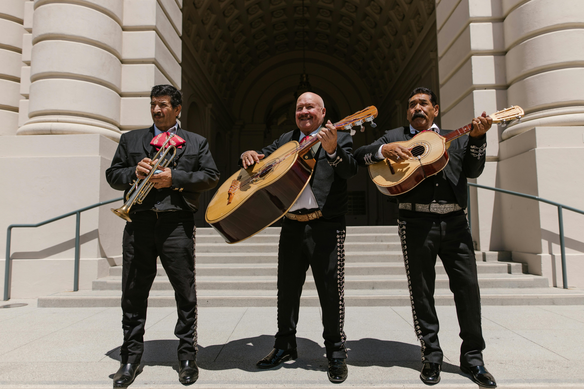

Sumergete en la música del mariachi

Ninguna visita a Guadalajara está completa sin experimentar las conmovedoras melodías de la música de mariachi. Dirígete a la Plaza de los Mariachis en Guadalajara Centro Histórico, donde puedes encontrar músicos talentosos dando serenatas a los visitantes con sus cautivadoras actuaciones. Disfruta del ambiente animado, bebe tequila o mezcal y deja que la música te transporte al corazón de la cultura mexicana.